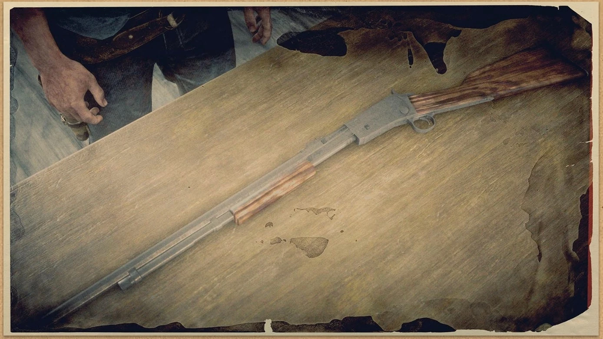

RIFLES
Varmint rifle
The quick-firing Lancaster Varmint Rifle is designed for hunting small mammals and large birds, using a special low-caliber type of ammunition with reduced damage. However, the large ammo capacity and fast fire rate make this an effective weapon against large groups of enemies. This gun has an ammo capacity of fourteen rounds, and can only use .22 caliber ammo.
Springfield rifle
A military favorite, the Lancaster Springfield is a powerful breech-loading weapon designed for medium to long-range combat. The high accuracy makes this weapon effective against large mammals, but the slow firing rate may be an issue when trapped in close quarters. This gun is a single-shot weapon, and can use Regular, High Velocity, Split Point, Express and Explosive rifle ammo.
Bolt action rifle

The B.D. & Co. Bolt Action is a strong and versatile rifle, built to perform in any environment. The bolt-action mechanism allows for quick firing and reloading, making this rifle an ideal choice for long-range combat with multiple targets. This gun has an ammo capacity of five rounds, and can use Regular, High Velocity, Split Point, Express and Explosive rifle ammo.
Rolling block rifle

Designed for hunting large beasts, the Litchfield Rolling Block is a powerful long scoped rifle, designed for long-range combat. With multiple telescopic sights available in different zoom levels, a sharpshooter can eliminate a target from afar and gain the element of surprise. This gun is a single-shot weapon, and can use Regular, High Velocity, Split Point, Express and Explosive rifle ammo.
Carcano rifle

The Sireno Carcano is a long scoped bolt-action rifle that can hold several rounds at once. When combined with the fast firing rate and quick reload speed, this makes it ideal for facing several enemies in long-distance combat. This gun has an ammo capacity of six rounds, and can use Regular, High Velocity, Split Point, Express, and Explosive rifle ammo.
Elephant rifle

The Elephant Gun Rifle from Mühlberg is a marvel of manufacturing and has been likened to holding a cannon, boasting a higher stopping power than nearly every other gun in Red Dead Online. However, it is stopped short of being overpowered by its two round capacity and low total ammunition carried (with a maximum of 38 Nitro Express rounds in reserve). Its ammunition is also relatively expensive for how little is bought, and it has wide spread, poor range and high recoil with a slow fire rate. Its damage ensures it almost always gets a one-shot kill on both players and NPCs. It is useful for hunting legendary animals but not regular animals, as it will reduce pelts to poor quality. Overall, it is more of a novelty weapon than a practical purchase, but can be effective in certain situations.